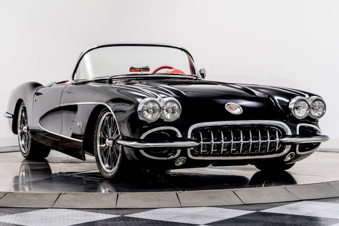

Antes e depois
Alguns modelos antigos foram substituídos por tecnologias modernas.
Atualmente, carros elétricos são uma tecnologia em crescimento.
Quando os carros ficaram populares?
A popularização ocorreu principalmente no século XX.